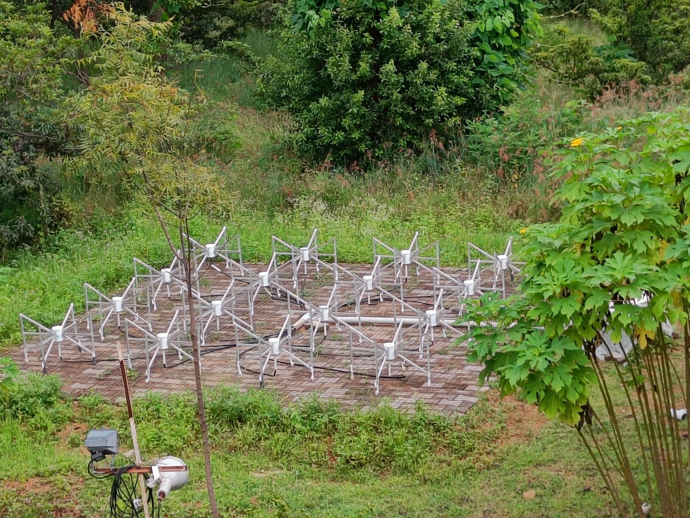
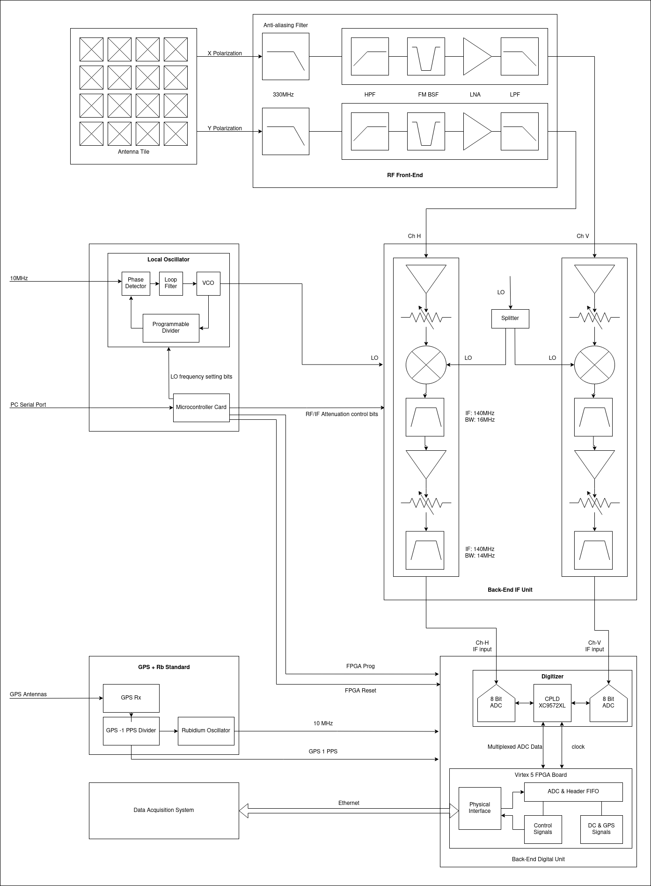

Sky Watch Array Network (SWAN)
The brainchild of Dr. Avinash Despande, the Indian Sky Watch Array Network aims to set up a group of radio telescopes across institutes in India, with the long-term goal of having a country wide radio interferometer which will help in the imaging of FRBs, pulsars and other astronomical sources.
It will significantly enchance Indian observing capabilities in the radio frequencies and also establish a sustainable approach to cultivate and support upcoming generations of skilled radio astronomers in India, enabling them to tackle challenges and spearhead compelling research in the field of radio astronomy.
SWAN makes use of an array of Murchison Wide-field Antenna (MWA). The array consisting of 16 dual-polarized wide-band bowtie shaped antennas, dubbed a ‘tile’, operates in the frequency ranges of 80-330MHz.

Each antenna houses two LNAs, one for each polarization, which then passes on to the beamforming unit. The beamforming unit applies the required phase delays to the signals. This crucial step allows us to point our antenna in any direction in the sky. As a result of this, we are able to resolve stationary and moving radio astronomical sources. The combined signal is further processed using a set of filters, amplifiers and attenuators and then digitized. The data collected can now be analyzed.
Instrumentation
The SWAN system is made of multiple components:
Antenna
A bowtie antenna is able to resolve X and Y poles in the form of H and V polarization. The 16 bowtie antenna are arranged in a 4x4 matrix covering 25 sq. m. The tile, as this formation is called, has a beamwidth of 30 and can scan up to 60 on either side of the zenith.
Each individual antenna element houses two LNAs, one for each polarization. The wire mesh placed on the ground acts as a reflector. These tiles are used to receive low frequency radio waves (80-330MHz) from different astronomical radio sources.
Beamformer Unit
The H and V channels of each antenna are connected to the beamformer. This comes out to a total 32 input signals. It introduces the required phase delays to these signals in order to point at the target radio source. It also provides power to the two LNAs present inside each antenna. The beamformer is given two values pertaining to the azimuth and zenith of the target in the sky. The beamforming PC calculates the phase delays required and then adds them to each of the 32 signals.
It combines the H and V polarizations separately and then sends it to the observatory.
RF-IF Unit
The RF-IF unit consists of multiples amplifiers, attenuators and filters. An LNA is used as it does not introduce its own noise into the signal. This noise figure dominates the noise figure of the entire block following the Friis formula for noise factor.
A control block is used to generate a local oscillator (LO) frequency which is fed into the RF-IF unit.
A spectrum analyzer is used to check the magnitude of the RF/IF (input/output) signals. The channel power is brought in range by changing the attenuator values if the signal strength is found to be outside the specified range:
- IF: -5dBm to -15dBm
- RF: -45dBm to 65dBm
DSP Unit
The DSP unit houses an ADC and FPGA which convert the analog data received from the telescope to digital data. There is a GPS block which generates a constant clock input of 10MHz to the DSP block. The output of the DSP block is then fed into the Data Acquistion System (DAS).
Flow of SWAN
The SWAN system can be visualized by the following diagram. 